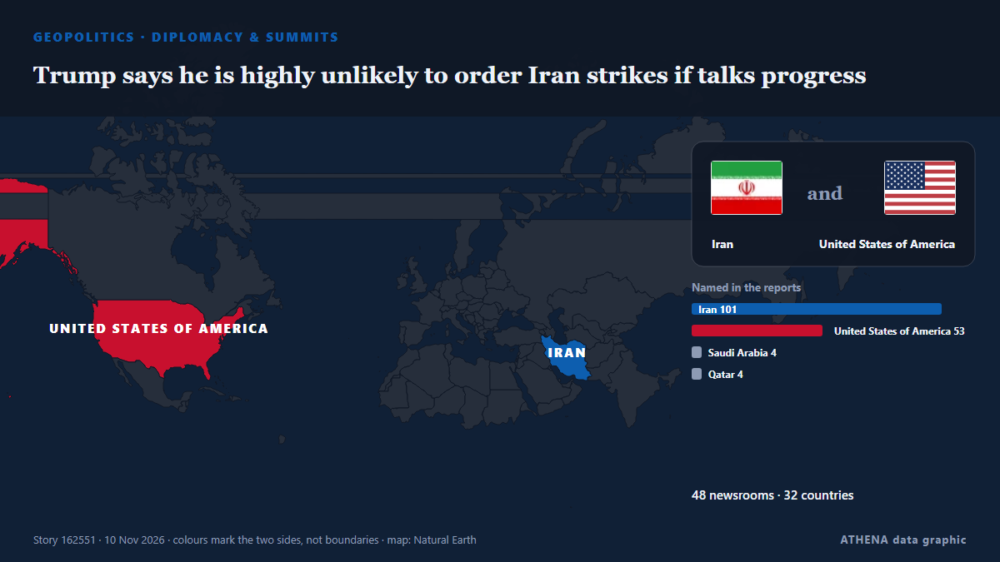

Trump says he is highly unlikely to order Iran strikes if talks progress

WASHINGTON/CAIRO, Nov 8 (Reuters) - US PresidentDonald Trump on Sunday said he was highly unlikely to order fresh attacks on Iran as long as talks to end the conflict progress, even as both countries… από Al-Monitor
Αναφέρθηκε ανεξάρτητα από 49 μέσα σε 33 χώρες από τις 8 Νοε, πρώτο το The New Arab· η κάλυψη εξαπλώνεται ακόμη. Το ATHENA εκτιμά τον κίνδυνο υψηλό (6.9/10), κυρίως λόγω της σοβαρότητάς του και της εμβέλειάς του. Βεβαιότητα 90% (υψηλή): το επιβεβαιώνουν 49 ανεξάρτητα μέσα, μέση αξιοπιστία 76%. Μέσα ανά χώρα: Ηνωμένες Πολιτείες (4), Ισραήλ (3), Τουρκία (2). Κάλυψη: 8 Νοε έως 9 Νοε, 19 ώρες.
Γιατί έχει σημασία: Τα Στενά του Ορμούζ συνδέουν τον Περσικό Κόλπο με τον ανοιχτό ωκεανό. Από εκεί περνά περίπου το ένα πέμπτο του πετρελαίου που καταναλώνεται παγκοσμίως, γι' αυτό επιθέσεις σε πλοία ή απειλές κλεισίματος επηρεάζουν μέσα σε λίγες ώρες τις τιμές της ενέργειας και τα ασφάλιστρα.
Τι άλλαξε: 11 νέες αναφορές από 11 μέσα στο 24ωρο έως 10 Νοε.
Πρώτη διατύπωση: Trump says return to war with Iran ‘highly unlikely’ if negotiations produce progress
Οι τίτλοι των ειδήσεων παρουσιάζονται στα αγγλικά, όπως δημοσιεύτηκαν.
Πώς να διαβάσετε αυτή τη σελίδα
- Τι διαβάζετε
- 49 μέσα σε 33 χώρες ανέφεραν αυτό το γεγονός. Οι αναφορές παρακάτω εμφανίζονται με τη σειρά που δημοσιεύτηκαν· κάθε τίτλος ανοίγει το αρχικό άρθρο. Το ATHENA δεν γράφει δικά του ρεπορτάζ.
- Η εκτίμησή μας
- Υπό παρακολούθηση — Οι αναφορές περιγράφουν ενέργεια ή απόφαση που δεν έχει ακόμη ληφθεί, ανάμεσα σε κράτη ή ένοπλες ομάδες. Το ATHENA παρακολουθεί τι θα συμβεί στη συνέχεια. Αναζητούμε τέσσερα είδη εξέλιξης: καμία περαιτέρω ενέργεια, μια ανοιχτή ενέργεια που κάποιος αναλαμβάνει, μια ενέργεια μέσω τρίτων ή χωρίς ανάληψη ευθύνης, και ένα ατύχημα ή μια παρεξήγηση. Δεν προβλέπουμε ποιο θα συμβεί.
- Πόσα στοιχεία υπάρχουν
- Ισχυρή Πολλά ανεξάρτητα μέσα σε πολλές χώρες περιγράφουν το ίδιο γεγονός.
Αφού αφαιρεθούν οι επαναλήψεις, τα άσχετα και τα παλιά στοιχεία, υπολογίζονται 23 από τις 40 αναφορές που παρατίθενται· το 100% των τίτλων αντιστοιχεί στο γεγονός.
- Τι δεν σημαίνει
- Το ATHENA μετρά πώς καλύπτεται ένα γεγονός, όχι αν είναι αληθές. Δεν είναι πρόβλεψη, κρίση για το ποιος έχει δίκιο ή συμβουλή.
- Τι θα την άλλαζε
- Αναφορές από άλλα ανεξάρτητα μέσα που δείχνουν διαφορετική εξέλιξη, ή σαφής επιβεβαίωση ή διάψευση από επίσημη πηγή.
Εκτίμηση R2 · ανανεώνεται με κάθε ενημέρωση της σελίδας. Το ATHENA δεν έχει δημοσιεύσει ακόμη ιστορικό επιδόσεων για αυτές τις εκτιμήσεις· όταν το κάνει, θα συνδέεται εδώ.
Με μια ματιά
Επιλέγεται, βαθμολογείται και γράφεται από τη δημοσιευμένη μεθοδολογία του ATHENA. Κανένας συντάκτης δεν παρεμβαίνει σε μεμονωμένα γεγονότα. Πώς παράγεται ›
| 08 Nov 09:31 UTC | 1 |
|---|---|
| 08 Nov 11:31 UTC | 0 |
| 08 Nov 13:31 UTC | 1 |
| 08 Nov 15:31 UTC | 0 |
| 08 Nov 17:31 UTC | 10 |
| 08 Nov 19:31 UTC | 12 |
| 08 Nov 21:31 UTC | 2 |
| 08 Nov 23:31 UTC | 5 |
| 09 Nov 01:31 UTC | 6 |
| 09 Nov 03:31 UTC | 3 |
| 09 Nov 05:31 UTC | 4 |
| 09 Nov 07:31 UTC | 2 |
| 09 Nov 09:31 UTC | 2 |
| 09 Nov 11:31 UTC | 0 |
| 09 Nov 13:31 UTC | 0 |
| 09 Nov 15:31 UTC | 0 |
| 09 Nov 17:31 UTC | 1 |
| 09 Nov 19:31 UTC | 0 |
| 09 Nov 21:31 UTC | 0 |
| 09 Nov 23:31 UTC | 0 |
| 10 Nov 01:31 UTC | 1 |
| 10 Nov 03:31 UTC | 0 |
| 10 Nov 05:31 UTC | 1 |
| 08 Nov 18:04 UTC | 4.6 |
|---|---|
| 08 Nov 18:07 UTC | 5.8 |
| 08 Nov 21:24 UTC | 6.6 |
| 09 Nov 01:54 UTC | 6.8 |
| 10 Nov 05:33 UTC | 6.9 |
Γιατί αυτοί οι αριθμοί
Σημασία
Κίνδυνος
Βεβαιότητα
Η κάλυψη — ποιος το ανέφερε και πότε
ο τίτλος όπως δημοσιεύτηκε · ανοίγει το πρωτότυπο- The New Arab · INTTrump says 'unlikely' to attack Iran, Araghchi warns US on talks
- Al-Monitor · Ηνωμένες ΠολιτείεςTrump says he is highly unlikely to order Iran strikes if talks progress
- Anadolu Agency (English) · ΤουρκίαTrump says return to Iran war 'highly unlikely' if talks advance
- The Jerusalem Post · ΙσραήλTrump says return to war with Iran ‘highly unlikely’ if negotiations produce progress
- Türkiye Today · ΤουρκίαTrump says renewed war with Iran ‘highly unlikely’ if talks yield a strong deal
- Haaretz (English) · ΙσραήλTrump tells CNN he is 'highly unlikely' to order Iran attack if talks progress
- TASS (English) · ΡωσίαNew attacks on Iran ‘highly unlikely,’ Trump says
- Al-Monitor · Ηνωμένες ΠολιτείεςTrump says he is unlikely to order Iran attack if talks progress, CNN reports
- Middle East Eye · INTTrump says fresh strikes on Iran ‘highly unlikely’ if talks progress
- APA (English) · ΑζερμπαϊτζάνTrump says renewed attacks on Iran ‘highly unlikely’ if talks show progress
- Arab News · Σαουδική ΑραβίαTrump says he is highly unlikely to order Iran strikes if talks progress
- Times of India · Ινδία‘They’re a failing nation’: Trump says fresh Iran strikes ‘highly unlikely’
- The Daily Star — page reader · ΜπανγκλαντέςTrump says resumption of war with Iran 'highly unlikely'
- Daily Maverick · Νότια ΑφρικήTrump says he is highly unlikely to order Iran strikes if talks progress
- Kurdistan24 (English) · ΙράκTrump Says Renewed US-Iran Fighting ‘Highly Unlikely’ If Talks Progress
- SBS News · ΑυστραλίαDonald Trump says he is 'highly unlikely' to order Iran strikes if talks progress
- The Straits Times · ΣιγκαπούρηTrump says resumption of war with Iran ‘highly unlikely’
- Free Malaysia Today · ΜαλαισίαTrump says resumption of war with Iran ‘highly unlikely’
- DW English · ΓερμανίαIran: Trump says strikes unlikely if peace talks keep moving
- Israel Hayom (English) · ΙσραήλTrump: Renewed strikes on Iran 'highly unlikely'
- The Hill · Ηνωμένες ΠολιτείεςTrump says he's 'unlikely' to renew attacks on Iran if talks show progress
- CNA (Channel NewsAsia) · ΣιγκαπούρηTrump says he is highly unlikely to order Iran strikes if talks progress
- investingLive (ForexLive) · INTWeekend: Trump says new Iran strikes ‘highly unlikely’ five times (but three carriers stay ready)
- CNBC World · Ηνωμένες ΠολιτείεςTrump says renewed Iran strikes ‘highly unlikely’ if talks progress but warns he could still strike
- Iran International (English) · ΙράνTrump signals openness to Iran deal amid renewed Hormuz tensions
- FXStreet · ΙσπανίαUS President Donald Trump says new Iran strikes unlikely if talks progress
- Business Recorder · ΠακιστάνTrump says resumption of war with Iran ‘highly unlikely’
- The New Arab · INTTrump says highly unlikely to resume Iran war if talks progress
- Xinhua (English) — page reader · ΚίναTrump says renewed strikes on Iran "highly unlikely" if talks progress
- Ada Derana · Σρι ΛάνκαTrump says he is highly unlikely to order Iran strikes if talks progress
- BusinessWorld · ΦιλιππίνεςTrump says he is highly unlikely to order Iran strikes if talks progress
- Times of India · ΙνδίαBrent crude falls over $1 as Trump signals fresh US strikes on Iran are unlikely
- The Business Standard (Bangladesh) (working feed) · ΜπανγκλαντέςTrump says he is highly unlikely to order Iran strikes if talks progress
- Ada Derana · Σρι ΛάνκαOil falls on open as Trump says fresh Iran attacks 'unlikely'
- MyJoyOnline · ΓκάναOil falls as Trump says new Iran attacks ‘unlikely’
- MyJoyOnline · ΓκάναTrump says he is highly unlikely to order Iran strikes if talks progress
- The Kathmandu Post · ΝεπάλTrump says he is highly unlikely to order Iran strikes if talks progress
- Gulf News · Ηνωμένα Αραβικά ΕμιράταOil dips again on Iran talks hopes, but physical Gulf crude climbs
- Oman Observer · ΟμάνTrump says Iran war 'highly unlikely' to resume
- Business Recorder · ΠακιστάνOil falls as Trump says new Iran attacks 'unlikely'